Because of their equivalence, it is possible to obtain Polarization Ray Tracing Matrix from the Jones Matrix of an optical element for a given incident and exiting directions, kq-1 and kq. In Jones calculus, calculation of reflection and refraction at qth interface (optical element) requires transformation of the field from global {x,y,z} to local s-p coordinates before the interface {sq,pq,kq-1} and then from local s-p after the interface {s’q,p’q,kq} back to the global coordinates.
The local coordinates before and after the interface are related as follows. The reflected and transmitted rays kq both lie on the same plane which contains the incident ray kq-1. The p (p for “parallel”) components of the local coordinates also lie in this plane by definition. As the s (s for “senkrecht” or perpendicular in Deutsch) components of the local coordinate systems are perpendicular to the plane containing p and k- components, it will be the same before and after the interface.
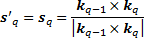
And the p - components are perpendicular to both k- and s- components so

Given the local coordinates before and after the interface in terms of global xyz coordinate 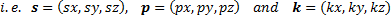 orthogonal matrices for the transformation of the electric field vector from global to local and then back to local coordinate are given by [7] as follows:
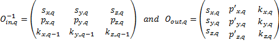
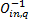 acts on incident field Eq-1 in global coordinate system and transforms to {sq,pq,kq-1} local coordinate and 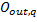 transforms the fields in the local coordinate {s’q,p’q,kq} back to the global coordinates.
The conversion of a 2x2 Jones Matrix, which is defined in the local {s,p} coordinates, to the polarization ray tracing matrices involves the following steps:
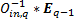
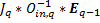
This vector is automatically in the local coordinate system {s’q,p’q,kq} after the element.
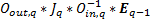. This will be the electric field vector Eq after the optical element.
So
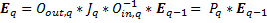
Therefore, the polarization ray tracing matrix 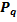 is given by
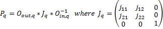
Note that a given Jones matrix can give different polarization ray tracing matrices depending on the incident and exiting ray directions.
Created with the Personal Edition of HelpNDoc: Full-featured Kindle eBooks generator